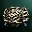
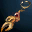
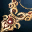
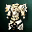
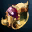
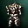

Lineage IIInterludeA
Заточка A-грейда в Lineage 2 Interlude
39 предметов · шансы +4…+16
Все предметы A-грейда, доступные в симуляторе заточки. Шанс зависит от типа предмета, а не от грейда.

Dark Crystal Breastplate · Броня
Majestic Earring · Бижутерия
Majestic Necklace · Бижутерия
Majestic Plate Armor · Броня
Majestic Ring · Бижутерия
Tallum Plate Armor · Броня